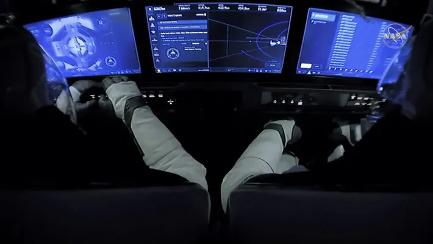

Qué le sucedería al cuerpo humano sin traje en el espacio
¿Cuál es el riesgo de no usar un traje de astronauta en el espacio?
En primer lugar, NASA dice que las personas enviadas al espacio sin un traje espacial perderían el conocimiento en 15 segundos y sufrirían un daño cerebral irreparable en tan solo 4 minutos.
Las temperaturas en el espacio pueden bajar a -100°C (Celsius) o subir hasta 120°C, lo cual varía extensamente en comparación a la temperatura habitual de la Tierra (la temperatura global para el año 2022 fue de 0.86°C según el programa de la Administración Nacional Oceánica y Atmosférica de la NASA).
El polvo espacial puede parecer indefenso, pero, viajando a gran velocidad, puede moverse más rápido que una bala y poner en riesgo la vida de una persona allí afuera.
En el caso del Sol, ver su resplandor directo podría ocasionar daños en el ojo humano y los altos niveles de radiación exponen al cuerpo desprotegido a contraer cáncer y enfermedades por radiación.
Una razón por la que los astronautas necesitan un traje espacial es para obtener oxígeno. En el espacio, la cantidad de oxígeno es escasa y la presión del aire es baja; por lo cual esa diferencia de condiciones provocaría a una persona la asfixia por falta de aire. Mientras que la ausencia de presión vaporizaría los fluidos corporales hasta escapar del cuerpo humano.
¿Cómo se prepara física y mentalmente un astronauta para ir al espacio?
Primero tiene que pasar una serie de exámenes médicos para cerciorarse de que no comprometa la misión. Por ejemplo, alguien que tiene ataques de asma y, eventualmente, tiene que ir a una sala de urgencias a que le pongan un inhalador no podría ir al Espacio. Todas esas cuestiones se revisan. A mí, como médico aeroespacial, me toca seleccionar a quiénes pueden volar y a quiénes no
¿Qué es lo que debe hacer el astronauta para conservar su estado físico entonces?
Para evitar esto tiene que hacer unas tres horas de ejercicio diario en el espacio. Hay que andar en una elíptica, bicicleta fija o en una caminadora, con un arnés con ligas que te une a la máquina. También hay que hacer ejercicio de peso, pero como allá hay masa, pero no peso, usan como unas barras con resortes.

¿Cómo se los entrena mentalmente para este tipo de misiones?
Se los prepara psicológicamente para estar en confinamiento, aislamiento y respetar la cadena de mando. Hay que entender que se está en una misión y que esa misión depende de un trabajo en equipo y no de manera individual. En misiones análogas también se incluye a psicólogos, quienes nos entrenan en cuestiones como el mindfulness para prepararnos mejor como grupo y tener una mayor inteligencia emocional. Ahora la gente alrededor del mundo ha experimentado un poquito de lo que es estar en confinamiento y en aislamiento. Sin embargo, todavía puedes abrir la ventana para tomar un poco de fresco o ir a pasear al perro, puedes dialogar con tu familia y amigos por video llamada.